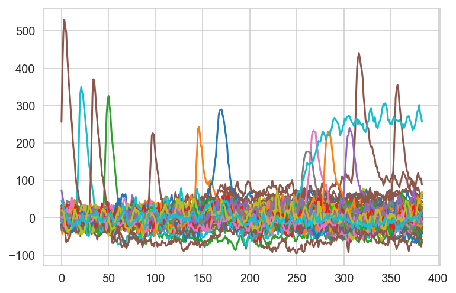

from oct2py import octaveEEG Lab Integration (In Construction…)
Integrating data preprocessing and feature engineering with EEG-Lab through Octave.
from oct2py import octave
# Example
octave.addpath('../../../eeglab2022.0/functions/guifunc')
octave.addpath('../../../eeglab2022.0/functions/popfunc')
octave.addpath('../../../eeglab2022.0/functions/adminfunc')
octave.addpath('../../../eeglab2022.0/functions/sigprocfunc')
octave.addpath('../../../eeglab2022.0/functions/miscfunc')
EEG = octave.pop_loadset('../../../eeglab2022.0/sample_data/eeglab_data_epochs_ica.set')# plot first trial of channel 1
import matplotlib.pyplot as plt
plt.plot(EEG.data[:20][0])
plt.show()
EEG.dataarray([[[ 2.99720556e-01, -2.27002201e+01, -3.03786087e+01, ...,
6.50506306e+00, 1.96530838e+01, 4.48800507e+01],
[ 1.47708530e+01, -2.66990261e+01, -1.77102699e+01, ...,
2.15030937e+01, 2.00707855e+01, 3.81899643e+01],
[ 9.81541634e+00, -3.10870762e+01, -2.23124809e+01, ...,
9.06659698e+00, 1.45347757e+01, 2.79867783e+01],
...,
[-6.59704208e+00, 4.76515055e+00, -6.70896378e+01, ...,
-2.80656266e+00, 5.02813416e+01, 3.23513818e+00],
[-2.08746262e+01, 1.75399780e+01, -7.11264420e+01, ...,
-1.55266600e+01, 5.30656929e+01, 1.39949541e+01],
[-2.06450272e+01, 1.59338455e+01, -5.83325615e+01, ...,
-1.78559952e+01, 6.89979172e+01, 1.60289345e+01]],
[[ 8.97458076e+00, -8.47458839e+00, 3.57027168e+01, ...,
4.99529457e+00, 8.78635216e+00, 2.41225777e+01],
[ 2.49004383e+01, -1.18544350e+01, 5.09160957e+01, ...,
2.58609009e+01, 1.05307426e+01, 2.10766602e+01],
[ 5.11914492e+00, -1.20421314e+01, 3.86015739e+01, ...,
7.99160957e+00, 3.36271477e+00, 1.77152386e+01],
...,
[-5.92987862e+01, -6.58087540e+01, -6.09985390e+01, ...,
-2.59302731e+01, 3.73778229e+01, 1.00686531e+01],
[-7.17435455e+01, -4.73045616e+01, -6.89564819e+01, ...,
-3.18692360e+01, 3.32411537e+01, 2.06878071e+01],
[-7.92148285e+01, -5.33047218e+01, -5.54454384e+01, ...,
-2.86430855e+01, 4.91855736e+01, 1.51083307e+01]],
[[ 1.47928464e+00, -2.51304188e+01, -1.07053490e+01, ...,
2.50700951e+01, 3.39128799e+01, 4.21649628e+01],
[ 2.30814362e+01, -2.15298061e+01, -5.59260607e+00, ...,
3.50741081e+01, 4.57127380e+01, 3.43763466e+01],
[ 1.17982674e+01, -2.69982052e+01, -1.54629631e+01, ...,
2.74137802e+01, 4.05118332e+01, 3.13652325e+01],
...,
[ 8.40039062e+00, 1.75759354e+01, -2.94956188e+01, ...,
-2.52356243e+00, 5.08532257e+01, 2.91940269e+01],
[ 4.26577616e+00, 2.79611664e+01, -3.76841774e+01, ...,
-2.00191517e+01, 4.78729935e+01, 3.85718994e+01],
[ 1.17477779e+01, 2.83751965e+01, -2.51706009e+01, ...,
-1.91058331e+01, 6.51554413e+01, 3.66048737e+01]],
...,
[[-5.22963858e+00, -8.16925716e+00, -1.19736938e+01, ...,
1.97712460e+01, 1.07007575e+00, -3.17954388e+01],
[ 7.54676437e+00, -6.79479980e+00, -8.16635895e+00, ...,
1.97822628e+01, 1.23730316e+01, -2.10283585e+01],
[ 3.47245669e+00, -3.83050489e+00, -9.00899887e+00, ...,
1.79013996e+01, 9.18996429e+00, -6.72756433e+00],
...,
[ 4.94876862e+01, 8.97159576e+00, 1.91829948e+01, ...,
-9.43519211e+00, -1.47199965e+01, -2.22776794e+01],
[ 4.71152687e+01, 1.62360916e+01, 7.41574430e+00, ...,
-6.16654348e+00, -1.87101460e+01, -1.69580116e+01],
[ 4.03415031e+01, 9.79112625e+00, 5.92826033e+00, ...,
1.24484658e+00, -7.35373116e+00, -2.03862991e+01]],
[[-6.58284855e+00, -4.16265392e+00, -2.10573959e+01, ...,
2.35093632e+01, -1.40330064e+00, -3.01745434e+01],
[ 7.99559832e+00, -3.38554144e+00, -1.32248116e+01, ...,
2.13034248e+01, 6.80579615e+00, -1.94827671e+01],
[ 1.61410403e+00, -3.04438758e+00, -1.17417736e+01, ...,
1.78866119e+01, 2.91150737e+00, -4.92253828e+00],
...,
[ 4.76172714e+01, 4.98307037e+00, 2.50972443e+01, ...,
-1.77920914e+00, -1.40039711e+01, -1.45771055e+01],
[ 3.75121155e+01, 8.81854248e+00, 1.14603767e+01, ...,
5.83786392e+00, -2.19732285e+01, -9.84155464e+00],
[ 3.17769032e+01, 3.20429850e+00, 1.03258171e+01, ...,
1.33718147e+01, -1.61360321e+01, -1.62799034e+01]],
[[-4.28801584e+00, 3.14514875e+00, -2.73413010e+01, ...,
2.81408939e+01, -5.17334557e+00, -2.92511578e+01],
[ 1.25567036e+01, 2.51382208e+00, -1.34160776e+01, ...,
2.50725117e+01, -4.34875712e-02, -1.98801460e+01],
[ 6.75363207e+00, 4.14497709e+00, -1.28773623e+01, ...,
2.17524662e+01, -6.48137856e+00, -7.08586693e+00],
...,
[ 3.83151665e+01, 1.41314954e-01, 3.00688477e+01, ...,
3.18429917e-01, -1.68101501e+01, -1.35089607e+01],
[ 2.55426769e+01, -2.78731853e-01, 1.68298035e+01, ...,
6.22832966e+00, -2.56508389e+01, -7.37998772e+00],
[ 2.04136124e+01, -5.69886875e+00, 1.62403564e+01, ...,
1.09556074e+01, -2.20681038e+01, -1.55489235e+01]]],
dtype=float32)